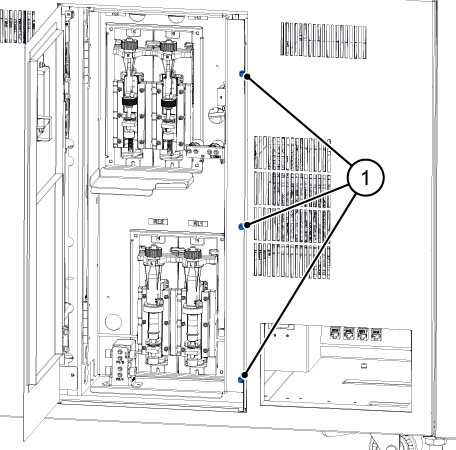
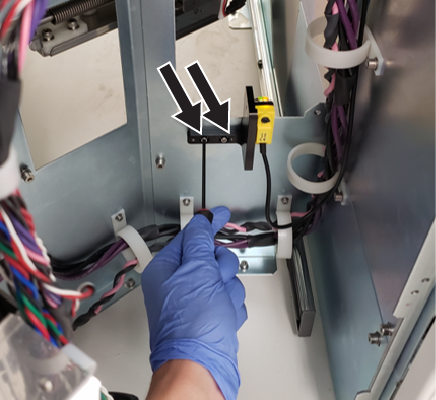
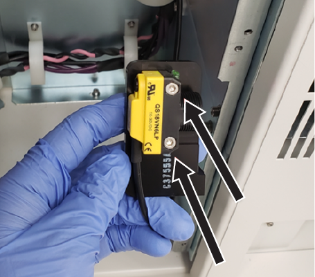
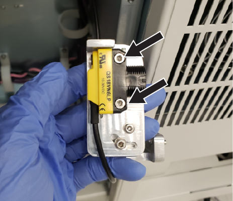

This topic includes information about how to replace the solid waste bag sensor bracket.
Note: Instruments prior to serial number 300116 were not manufactured with the newer style adjustable sensor bracket. If the sensor is not operating correctly due to misalignment, you can replace the fixed mounting bracket with the newer adjustable style bracket.
Safety Reminder
Servicing the DxI 9000 instrument involves potential risks for pinch and puncture, electrical shock, and exposure to hazardous materials. You must mitigate these risks by taking appropriate countermeasures. See
Safety for more information.
Components
The following components are needed to replace the fixed bracket with the newer adjustable bracket.
QTY. 1 BRACKET 1, SENSOR, SOLID WASTE BAG
QTY. 1 BRACKET 2, SENSOR, SOLID WASTE BAG
QTY. 1 BRACKET 3, SENSOR, SOLID WASTE BAG
QTY. 4 SHCS, M3x0.5, 12MM L, SEMS
See the
DxI 9000 Parts List parts manual for more information about parts numbers.
Replacing the Solid Waste Bag Sensor Bracket
Perform this procedure to replace the solid waste bag sensor bracket.
Facing the rear of the instrument, open the lower right door to gain access to the fluidics panel, which contains syringe pumps for reagent pipettors 1 and 2.
Use a 3mm driver to remove the screws on the fluidics panel. Swing the fluidics panel open to gain access inside the instrument to where the waste bin sensor is located.
Figure 421: Fluidics Door and Screws

1
Fluidics door screws (x3)
Use a 2.5mm driver to unfasten the two screws that attach the bag sensor bracket to the sheet metal partition.
Figure 422: Solid Waste Bag Sensor Bracket Screws

Use a 2.5mm driver to unfasten the two screws that attach the bag detect sensor to the bracket.
Figure 423: Solid Waste Bag Sensor Screws

If you are replacing the sensor, disconnect the cable and replace it with the new sensor.
If you are replacing the fixed mounting bracket with the new adjustable bracket, assemble the bracket using the components identified above.
Use the original screws to attach the bag detect sensor to the bracket assembly.
Figure 424: Solid Waste Bag Sensor Attached to New Adjustable Bracket

Use the original screws to attach the bracket assembly to the partition.
Figure 425: New Adjustable Bracket Attached to Partition